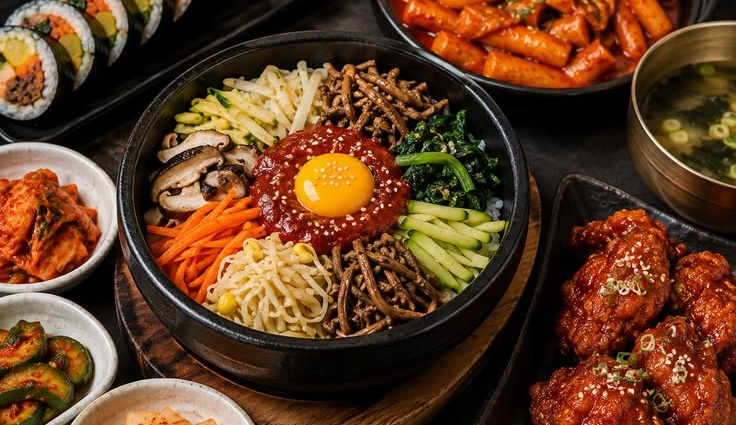
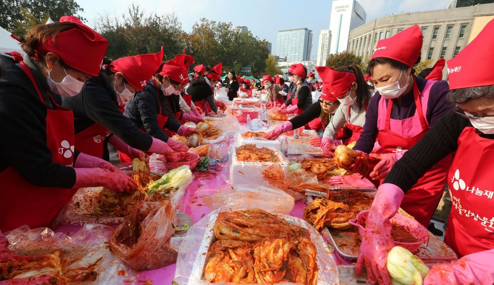

Jelajah Negara
Kenalan dengan budaya dari 4 negara pilihan.
 Korea
Korea
Seoul • Bahasa Korea • Won
Korea (Selatan) berada di Semenanjung Korea, Asia Timur. Negara ini memadukan tradisi yang masih dijaga, seperti pakaian hanbok dan upacara teh, dengan kehidupan modern yang penuh teknologi, musik, dan drama. Bahasanya ditulis dengan Hangul, aksara yang dibuat khusus agar mudah dipelajari.
Sapaan: Annyeonghaseyo (안녕하세요) - belajar kosakata lainnya →

Kimchi, Bibimbap, Bulgogi, Tteokbokki
Kimchi adalah sayuran fermentasi yang pedas dan asam, hampir selalu ada di meja makan. Bibimbap berupa nasi dengan aneka sayur, telur, dan saus gochujang. Bulgogi adalah daging sapi iris tipis yang dimarinasi manis gurih, sedangkan tteokbokki adalah kue beras kenyal dengan saus pedas manis yang populer sebagai jajanan.

Kimjang dan Hormat pada yang Lebih Tua
Kimjang adalah tradisi membuat kimchi bersama-sama menjelang musim dingin, biasanya melibatkan keluarga dan tetangga. Dalam budaya makan, orang yang lebih muda menunggu yang dituakan mulai makan lebih dulu sebagai tanda hormat.
Hati-hati dengan Tinta Merah
Menulis nama orang yang masih hidup dengan tinta merah dianggap tabu dan membawa sial. Secara tradisional, warna merah dipakai untuk menulis nama orang yang sudah meninggal.